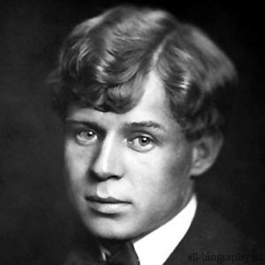

Есенин
Сергей Александрович Есенин (1895–1925) – великий русский поэт, представитель новокрестьянского поэтического искусства и имажинизма в литературе. В разные периоды творчества в его стихотворениях находили отражение социал-демократические идеи, образы революции и Родины, деревни и природы, любви и поиска счастья.
Есенин был хорошо образован, много читал, однако совсем не знал языков. Со своей женой Айседорой он не мог говорить по-английски, а она едва изъяснялась по-русски. Живя за границей, с иностранцами он общался с помощью переводчика.
Есенин стал отцом довольно рано – в возрасте 18 лет. Первым ребенком от гражданского брака с Анной Изрядновой стал сын Юрий, который был расстрелян по ложному обвинению в покушении на жизнь Сталина в 1937 году.
Идейным литературным оппонентом Есенина был, конечно, Маяковский, который принадлежал к футуристам. Поэты могли публично принижать творчество друг друга, однако каждый из них был высокого мнения о таланте другого.
До сих пор остается неразгаданной тайна гибели поэта. Кроме версии самоубийства существует также предположение об убийстве на политической почве, которое было инсценировано под самоубийство.